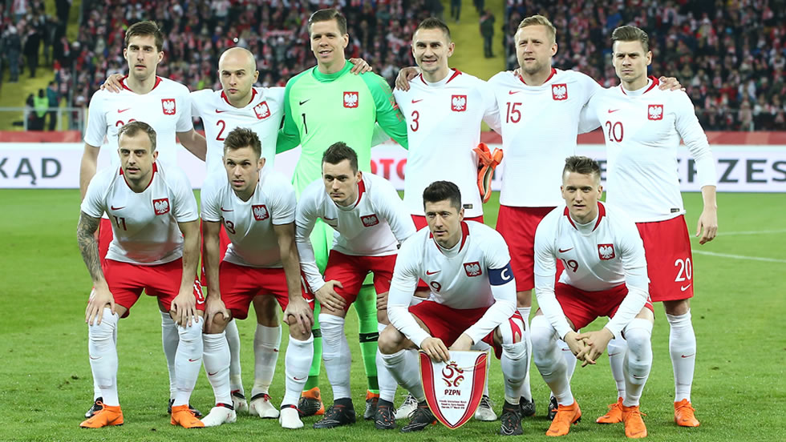

Ranking FIFA: 26° (octubre 2022).
¿Cómo se clasificó al Mundial? Derrotó por 2-0 a Suecia en la definición de una de las repescas europeas.
Rendimiento en 2021 (G-E-P): 6-5-4 (37 GF, 20 GC, +17).
Rendimiento en 2022: 3-2-3 (7 GF, 13 GC, -6).
Wojciech Szczesny; Matty Cash, Bartosz Bereszynski, Kamil Glik, Jan Bednarek, Tymoteusz Puchacz; Piotr Zielinski, Grzegorz Krychowiak, Jakub Moder; Arkadiusz Milik, Robert Lewandowski.
Nacionalidad: polaco.
Edad: 52 años.
Contratado: 31 de enero de 2022.
Récord en el cargo (G-E-P): 3-2-3.
Títulos en el cargo: Ninguno.
Victoria más notable: 2-0 sobre Suecia, final de la repesca europea.
1930 Uruguay -
1934 Italia -
1938 Francia 11°
1950 Brasil -
1954 Suiza -
1958 Suecia -
1962 Chile -
1966 Inglaterra -
1970 México -
1974 Alemania 3°
1978 Argentina 5°
1982 España 3°
1986 México 14°
1990 Italia -
1994 Estados Unidos -
1998 Francia -
2002 Corea y Japón 25°
2006 Alemania 21°
2010 Sudáfrica -
2014 Brasil -
2018 Rusia 25°
